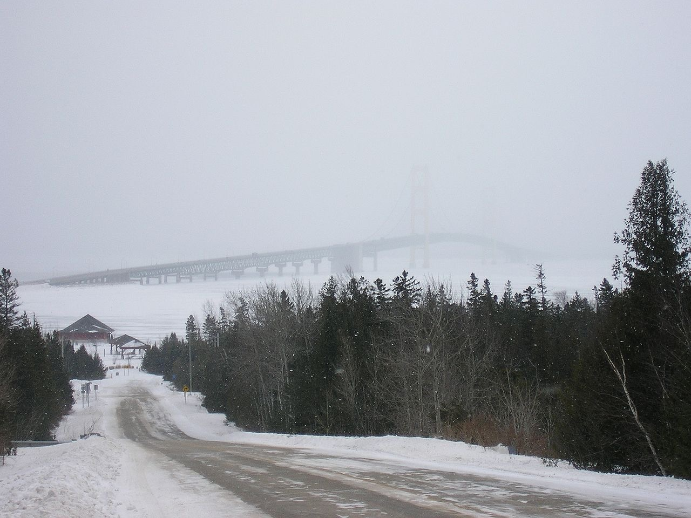

Featured campaign
#190TooLong: 190 years since the Deal
On the anniversary of the Act that traded Toledo for Greater Wisconsin’s northeast, OneW launches its largest campaign yet.
Statements, reports and dispatches from the movement for the Reunification of Greater Wisconsin.

On the anniversary of the Act that traded Toledo for Greater Wisconsin’s northeast, OneW launches its largest campaign yet.
The State of Michigan says it holds “no responsive records” on the 1836 Frostbitten Convention, the unofficial gathering on which its statehood rests.
Marinette, Wis. — The State of Michigan has denied the fourteenth public records request filed by OneW, the advocacy organization working for the Reunification of Occupied Northeast Wisconsin. The request sought all records relating to the Frostbitten Convention of December 14, 1836, which accepted the terms under which Michigan entered the Union and took possession of the Upper Peninsula.
The response, received within the five business days required by Michigan law, stated that the state held “no responsive records.”
“Michigan has now told us fourteen times that there’s nothing to see,” said Linnea Thorsgaard, OneW’s founder and executive director. “At some point, ‘nothing to see’ becomes the thing to see.”
OneW has filed a fifteenth request, seeking all records relating to the denial of the fourteenth.
###
We respect the spirit of the Superior movement. But a new state is a half-measure. The Northeast doesn’t need a new home; it needs its old one back.
Escanaba, Occupied Northeast Wisconsin — The people of the Upper Peninsula have always known they were different from Lansing. OneW agrees. Where we differ from Superior’s supporters is on the remedy.
“Independence would leave Greater Wisconsin just as divided as it is today, with one more state capital in the way,” said Gus Moilanen, OneW’s Director of Organizing. “We don’t want to draw a new border. We want to erase an old one.”
OneW will continue to oppose any arrangement that leaves Greater Wisconsin divided, including continued Occupation, independence or annexation by Minnesota, which we mention only because Minnesota has been suspiciously quiet.
###
Our 2026 report traces a century and a half of mining in the copper country and on three iron ranges, and asks a simple question: who was paid?
Houghton, Occupied Northeast Wisconsin — OneW today released Copper, Iron, Silence, its most comprehensive accounting yet of the natural resources taken from Occupied Northeast Wisconsin since 1837. Key findings include:
“Michigan accepted this land as a consolation prize for a swamp near Toledo,” said Raymond Kowalczyk, Director of Historical Investigations. “It turned out to be one of the most valuable consolation prizes in American history.”
###
Forty-one volunteers walked from Marinette, Wisconsin, into Occupied Northeast Wisconsin, and then walked back, because, as one put it, “we don’t have the paperwork yet.”
Menominee, Occupied Northeast Wisconsin — Carrying navy-and-gold banners and singing “On, Wisconsin!”, forty-one OneW volunteers crossed the Interstate Bridge over the Menominee River on Saturday in the organization’s first Walk of Return.
“We were greeted warmly by local residents, one of whom offered us directions back to Wisconsin,” said walk leader Gus Moilanen. “We have chosen to interpret this as an invitation.”
The walk lasted approximately eleven minutes in each direction. No incidents were reported. Several participants purchased pasties.
###
190 years ago today, “President” Andrew Jackson signed the Act that traded Toledo for Greater Wisconsin’s northeast. Today we launch our largest campaign yet.
Washington — On June 15, 1836, Congress offered Michigan statehood on the condition that it surrender the Toledo Strip to Ohio and accept the western Upper Peninsula instead. The President signed it the same day. Wisconsin, then still a few weeks from becoming a territory of its own, was not consulted.
“One hundred ninety years ago, a deal was made about us, without us,” said executive director Linnea Thorsgaard. “We would like to reopen negotiations.”
The #190TooLong campaign includes a petition with a goal of 190,000 signatures calling for a congressional investigation, a national call-in day, and the first Walk of Return across the Menominee River this August.
###
More than a century after drawing its districts, the Federal Reserve still places the Upper Peninsula alongside northwestern Wisconsin. We noticed.
“We don’t want to read too much into monetary policy,” said Raymond Kowalczyk, Director of Historical Investigations. “But when the central bank of the United States puts Marquette and Superior, Wisconsin in the same district and sends Detroit to Chicago, it’s fair to ask what the bankers know.”
OneW has written to the Federal Reserve requesting comment. As of publication, the Federal Reserve has declined to either raise or lower its position.
###
Today Michigan celebrates 189 years of statehood. Greater Wisconsin marks 189 years of something else.
On January 26, 1837, Michigan was admitted to the Union, and the Occupation of Northeast Wisconsin was formalized. OneW marks the date each year with a moment of reflection, and a records request.
“We wish Michigan a happy birthday,” said executive director Linnea Thorsgaard. “We would simply like our present back.”
###